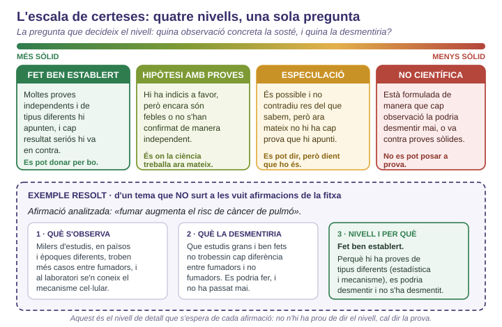
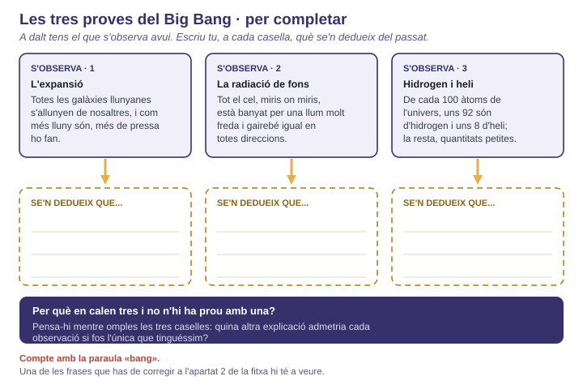
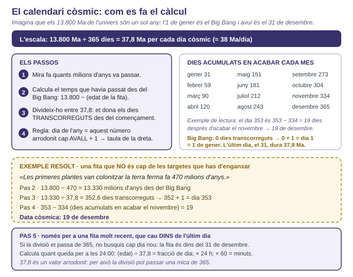
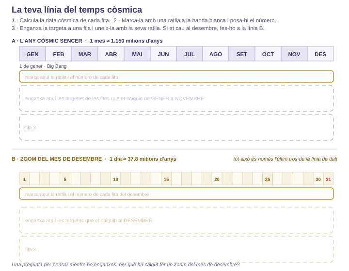

Escriu una afirmació sobre l'origen de l'univers, de la Terra o de la vida que consideris ben establerta, i digues quina observació la desmentiria si es fes.
Com decideixes, en general, si una cosa se sap o només se suposa? Escriu el teu criteri en dues o tres frases.

Fig.1 · Els quatre nivells de la SA1 i un exemple resolt d'un tema que no surt a la taula. La pregunta que decideix el nivell: quina observació la sosté i quina la desmentiria?
1a. Per a cada afirmació: nivell + la prova concreta en què us baseu (o la que hi faltaria).
| N. | Afirmació | Nivell de certesa | En quina prova em baso |
|---|---|---|---|
| 1 | L'univers s'expandeix: fa uns 13.800 Ma tot el que existeix estava molt més junt, més dens i més calent que ara. | ||
| 2 | Titular: «Detecten a Mart un gas que a la Terra fabriquen sobretot éssers vius». La notícia explica que un robot de la NASA ha mesurat petites quantitats de metà a l'atmosfera de Mart que pugen i baixen segons l'època de l'any. A la Terra, la major part del metà el fan éssers vius, però també se'n forma en reaccions entre roca i aigua, sense cap ésser viu. | ||
| 3 | La Terra té uns 4.600 Ma d'edat. Es dedueix de la datació radiomètrica de meteorits i de les roques més antigues, feta per laboratoris diferents amb elements diferents. | ||
| 4 | La vida a la Terra va començar a prop de fumaroles hidrotermals del fons marí. Al voltant d'aquestes fumaroles hi ha avui comunitats senceres d'éssers vius sense llum del sol, i al laboratori s'hi han format molècules de la vida; però no és l'única hipòtesi que hi ha. | ||
| 5 | Hi ha civilitzacions molt avançades que ens visiten, però que esborren qualsevol rastre que els nostres instruments puguin detectar. | ||
| 6 | Si algun dia trobem vida sota el gel d'Encèlad, una lluna de Saturn, s'assemblarà als bacteris de les fumaroles de la Terra. D'Encèlad se'n sap que té un oceà d'aigua líquida sota el gel i que expulsa vapor amb molècules amb carboni. De vida, no se n'hi ha detectat cap senyal. | ||
| 7 | L'univers va ser creat fa 6.000 anys exactament tal com és ara, i totes les proves que indiquen una edat molt més gran hi van ser posades perquè ho semblessin. | ||
| 8 | Titular: «La galàxia és plena de planetes com la Terra». La notícia diu que a la nostra galàxia hi ha molts planetes rocosos amb aigua líquida a la superfície. S'han confirmat més de 5.000 exoplanetes i alguns són rocosos i estan a la distància adequada de la seva estrella. La paraula «molts» surt d'estimar, a partir dels que hem trobat, quants n'hi deu haver que no hem mirat. |
1b. Tria les dues que us hagin costat més de situar. Per a cadascuna, quina observació concreta hauria de fer un telescopi o un laboratori perquè pugés de nivell?
| N. | Per què us ha costat | Observació concreta que la faria pujar de nivell |
|---|---|---|
1c. Per què una afirmació que ningú no pot desmentir mai és més feble, i no més forta, que una que es podria desmentir demà?
1d. Reescriu el titular de les dues afirmacions que diuen més del que la prova sosté, sense fer-lo avorrit.
Omple la figura abans de l'explicació de classe i després corregeix-la amb un bolígrafi d'un altre color.
2a. Omple les tres caselles grogues de la figura: què se'n dedueix sobre el passat de l'univers?

Fig.2 · Les tres observacions ja les tens escrites. Les caselles grogues les omples tu.
2b. Imagina que només tinguéssim la primera prova. Quina objecció s'hi podria posar? I com la tanquen les altres dues?
2c. Digues exactament què hi ha de fals en aquesta frase i escriu-la com la dirieu vosaltres.
2d. Explica per què observar l'univers llunyà és observar el passat. Després treu-ne una conseqüència sobre els límits del que podem arribar a saber: hi ha alguna cosa que no puguem observar mai, per lluny que hi arribem?
3a. Explica com es passa d'un núvol de gas i pols al Sol i als planetes. Fes servir les paraules gravetat, disc i fusió nuclear.
3b. A partir d'això, proposa una explicació de per què a prop del Sol hi ha planetes petits i rocosos i lluny n'hi ha de gegants i gasosos.
3c. Si tots els planetes es van formar alhora, per què costa tant de datar la Terra amb les roques de la seva pròpia superfície? (Pensa en què li passa continúament, a la superfície de la Terra.)

Fig.3 · El mètode i un exemple resolt que no és cap de les set fites de la taula. L'escala: 13.800 Ma = 1 any → 37,8 Ma per dia.
4a. Calcula la data còsmica de cada fita i deixa el càlcul escrit. Regla: dia de l'any = resultat de la divisió arrodonit cap avall + 1. La fita 7 cau dins de l'últim dia: dona'n l'hora del 31 de desembre.
| N. | Fita | Fa (Ma) | Càlcul complet (resta ÷ 37,8 → dia) | Data còsmica |
|---|---|---|---|---|
| 1 | Big Bang | 13.800 | ||
| 2 | Formació del sistema solar i de la Terra | 4.600 | ||
| 3 | Primers éssers vius | 3.800 | ||
| 4 | Gran Oxidació (l'atmosfera s'omple d'oxigen) | 2.400 | ||
| 5 | Primers animals | 600 | ||
| 6 | Extinció dels dinosaures no aviaris | 66 | ||
| 7 | Homo sapiens | 0,3 |
4b. Marca cada fita a la línia i enganxa-hi la targeta del full de retallables. La línia B és un zoom del desembre: digues, en una línia al costat, per què ha calgut fer-lo.
4b bis. Per què ha calgut fer un zoom del mes de desembre? Què hauria passat sense ell?

Fig.4 · A dalt, l'any còsmic sencer (1 mes ≈ 1.150 Ma). A baix, el zoom del mes de desembre (1 dia ≈ 37,8 Ma). Cada tram té dues files per enganxar-hi targetes.
4c. (posada en comú oral) Tria dues fites i digues quina mena de prova ens permet saber quan van passar.
| Fita (tria'n dues) | Quina mena de prova ens permet saber-ho |
|---|---|
4d. Digues per què aquestes dues lectures són enganyoses. Fes servir números: quants milions d'anys hi ha de debò darrere de cada «dia» i de cada «setmana»?
4e. (si et sobra temps) Proposa una manera diferent de representar aquests 13.800 Ma que no tingui aquest problema, i digues què hi guanyes i què hi perds.